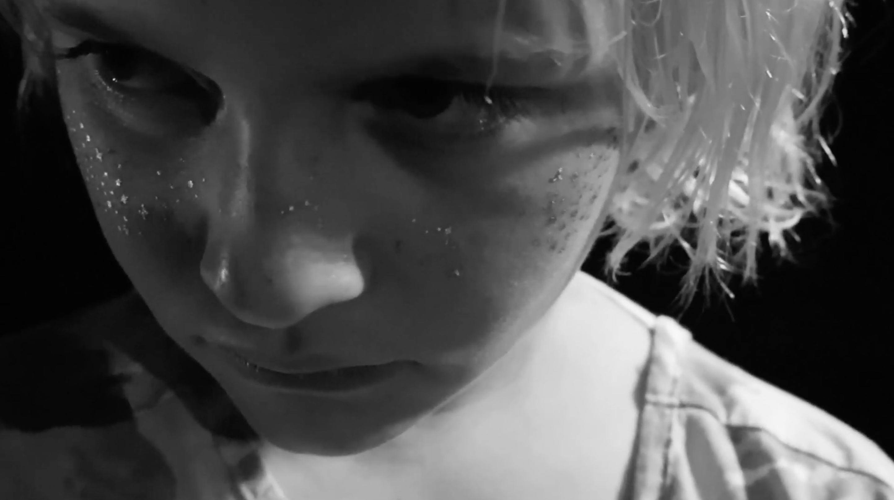
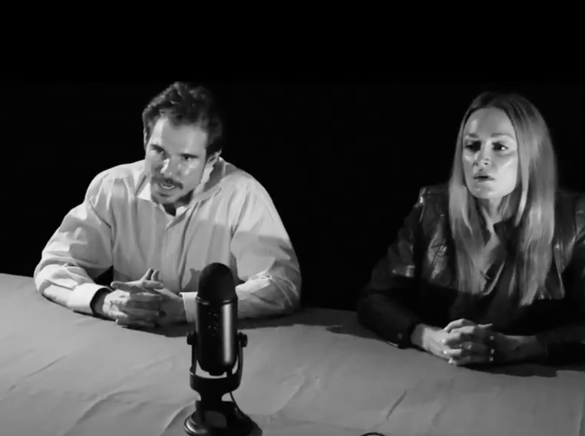

Exclusive Interview with FHBP Director
November 2024

SD: Genre. Where does this sit.
SC: Terror, horror, gross-out. This one lives in the gross-out layer, with a big puddle of blood on the floor. The floor is where the money is.
SD: It is also a comedy.
SC: Three homicide detectives interrogate a ten-year-old who turns them into a crime scene one at a time. If that is not funny to you, I cannot help you.

SD: Black and white. Why.
SC: Same reason we use sheets, limit the variables, focus the audience on one thing... the horror taking place in front of them. Note the pink color of our fake blood.
SD: The missing-child flier.
SC: She has not aged a day since he went missing, that's when we know something is up. It's when we jump from detective to fantasy.
SD: Fantasy? Is this fantasy.
SC: Well all horror is fantasy, just swap out Tinker Bell for Freddy Krueger
SD: Final word.
SC: Do not touch the puppy. That is the whole film. It's up to you to figure out what that means.
— SD
Shane Campbell is the writer-director behind Fat Happy Baby Productions. For the November 2024 LA 48 Hour Film Project he shot Lost and Found, a black-and-white interrogation-room horror in which three homicide detectives question a blood-covered ten-year-old girl who will only say one thing about her puppy. Sean Dog found Shane washing a pile of bedsheets he described as the set.
SD: You said this one hits every standard.
SC: Yep. We require child, dog, sheets, tables, and the removal of a limb. I did not plan it, but we finally made the complete Fat Happy Baby film. The others were rehearsal.
SD: The room is all sheets.
SC: Two picnic tables and a room draped in sheets. Like I said we removed all variables to make sure we get full suspension of disbelief.
SD: Budget.
SC: We even splurged, ordered carne asada burritos for lunch. I had my best guy fetch them. His name is Sean Dog.
SD: The girl does not do anything. She just sits there.
SC: She says four words. Do not touch my puppy. The lead detective pets the dog anyway, which as you saw was the wrong move.
SD: She kills them with her mind.
SC: Yep. So that solves dealing with a child actor issue. She just sits there. One goes face-first into the table and rips them to shreds. Horror is not about who is strong. It is about who was never in charge.
SD: Someone wrote in that they could still see the missing legs in the green screen.
SC: I will take genius. A clean effect is a lie.
SD: Why did this not make the finals.
SC: Ask the finals. We do not slow down for rooms we are not invited into. All gas, no brakes.